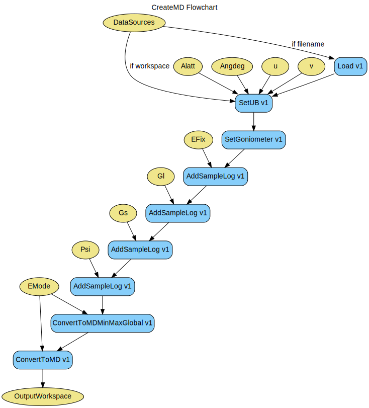

\(\renewcommand\AA{\unicode{x212B}}\)
CreateMD v1¶
{kind=link}
CreateMD dialog.¶
Summary¶
Creates an MDWorkspace in the Q3D, HKL frame
See Also¶
Properties¶
Name |
Direction |
Type |
Default |
Description |
|---|---|---|---|---|
OutputWorkspace |
Output |
Mandatory |
MDEventWorkspace with new data appended. |
|
DataSources |
Input |
str list |
Mandatory |
Input workspaces to process, or filenames to load and process |
EFix |
Input |
dbl list |
datasource energy values in meV |
|
Emode |
Input |
string |
Direct |
Analysis mode [‘Elastic’, ‘Direct’, ‘Indirect’]. Allowed values: [‘Elastic’, ‘Direct’, ‘Indirect’] |
Alatt |
Input |
dbl list |
Mandatory |
Lattice parameters |
Angdeg |
Input |
dbl list |
Mandatory |
Lattice angles |
u |
Input |
dbl list |
Mandatory |
Lattice vector parallel to neutron beam |
v |
Input |
dbl list |
Mandatory |
Lattice vector perpendicular to neutron beam in the horizontal plane |
Psi |
Input |
dbl list |
Psi rotation in degrees. Optional or one entry per run. |
|
Gl |
Input |
dbl list |
gl rotation in degrees. Optional or one entry per run. |
|
Gs |
Input |
dbl list |
gs rotation in degrees. Optional or one entry per run. |
|
InPlace |
Input |
boolean |
True |
Execute conversions to MD and Merge in one-step. Less memory overhead. |
Filename |
Input |
string |
The name of the Nexus file to write, as a full or relative path. Only used if FileBackEnd is true. Allowed extensions: [‘.nxs’] |
|
FileBackEnd |
Input |
boolean |
False |
If true, Filename must also be specified. The algorithm will create the specified file in addition to an output workspace. The workspace will load data from the file on demand in order to reduce memory use. |
Description¶
This workflow algorithm creates MDWorkspaces in the Q3D, HKL frame using ConvertToMD v1.
Using the FileBackEnd and Filename properties the algorithm can produce a file-backed workspace. Note that this will significantly increase the execution time of the algorithm.
Setting the UB matrix¶
u and v are required. u and v are both 3-element vectors. These specify how the crystal’s axes were oriented relative to the spectrometer in the setup for which you define psi to be zero. u specifies the lattice vector that is parallel to the incident neutron beam, whilst v is a vector perpendicular to this in the horizontal plane. In UB matrix notation, u and v provide the U matrix. See SetUB v1. Alatt and Angdeg are the lattice parameters in Angstroms and lattice angles in degrees respectively. Both are 3-element vectors. These form the B-matrix.
Goniometer Settings¶
If goniometer settings have been provided then these will be applied to the input workspace(s). For multiple input workspaces, you will need to provide goniometer settings (Psi, Gl, Gs) as vectors where each element of the vector corresponds to the workspace in the order listed in InputWorkspaces. You do not need to provide the goniometer settings at all. If you run SetGoniometer v1 individually on the input workspace prior to running CreateMD, then those settings will not be overwritten by CreateMD.
EFix¶
The EFix value may be provided for input workspaces. Specifying a single value, will ensure that that value is applied to all input DataSources. EFix can also be provided as an array provided that the array is the same length as the DeataSources, in this case, the EFix values will be matched to the DataSources based on index. EFix has units of meV.
Merging Individually Converted Runs¶
If a sequence of input workspaces are provided, and InPlace is False, then these are individually processed as above, and are merged together via MergeMD v1. Intermediate workspaces are not kept. If InPlace is applied conversion and merging are done in the same step. This requires less memory overhead, however input workspaces are altered.
Additional Information¶
CreateMD steps use ConvertToMDMinMaxGlobal v1 to determine the min and max possible extents prior to running ConvertToMD v1 on each run.

Horace style orientation used by CreateMD. DSPI and Omega in the image have no meaning in Mantid and are not required by this algorithm.¶
Workflow¶
Conversion Of Multiple Input Files Example¶
import numpy as np
# Create arrays of run numbers and corresponding values of psi
run_numbers = range(15052, 15098)
psi_array = np.arange(0.0, 92.0, 2)
# Create list of file names from run numbers
input_runs = ['/path/to/data/instr_'+str(run_number)+'.nxspe' for run_number in run_numbers]
md_ws = CreateMD(input_runs, Emode='Direct', Alatt=[2.87, 2.87, 2.87], Angdeg=[90, 90, 90], u=[1, 0, 0,], v=[0, 1, 0], Psi=psi_array, EFix=400.0)
Conversion Of A Single Input Workspace Example¶
# Create some input data.
current_ws = CreateSimulationWorkspace(Instrument='MAR', BinParams=[-3,1,3], UnitX='DeltaE')
AddSampleLog(Workspace=current_ws,LogName='Ei',LogText='3.0',LogType='Number')
# Execute CreateMD
new_mdew = CreateMD(current_ws, Emode='Direct', Alatt=[1.4165, 1.4165,1.4165], Angdeg=[90, 90, 90], u=[1, 0, 0,], v=[0,1,0], Psi=6, Gs=0, Gl=[0])
# Show dimensionality and dimension names
ndims = new_mdew.getNumDims()
for i in range(ndims):
dim = new_mdew.getDimension(i)
print(dim.getName())
Output¶
[H,0,0]
[0,K,0]
[0,0,L]
DeltaE
Conversion Of Multiple Input Workspaces Example¶
# Create multiple runs
input_runs = list()
psi = list()
gs = list()
gl = list()
for i in range(1, 5):
current_ws = CreateSimulationWorkspace(Instrument='MAR', BinParams=[-3,1,3], UnitX='DeltaE', OutputWorkspace='input_ws_' + str(i))
input_runs.append(current_ws.name())
psi.append(float(5 * i))
gl.append(0.0)
gs.append(0.0)
# Convert and merge
new_merged = CreateMD(input_runs, Emode='Direct', Alatt=[1.4165, 1.4165,1.4165], Angdeg=[ 90, 90, 90], u=[1, 0, 0,], v=[0,1,0], Psi=psi, Gl=gl, Gs=gs, EFix=3.0)
# Show dimensionality and dimension names
ndims = new_merged.getNumDims()
for i in range(ndims):
dim = new_merged.getDimension(i)
print(dim.getName())
Output¶
[H,0,0]
[0,K,0]
[0,0,L]
DeltaE
Multi Conversion Example Without Altering Original Workspaces (InPlace=False)¶
# Create multiple runs
input_runs = list()
psi = list()
gs = list()
gl = list()
for i in range(1, 5):
current_ws = CreateSimulationWorkspace(Instrument='MAR', BinParams=[-3,1,3], UnitX='DeltaE', OutputWorkspace='input_ws_' + str(i))
input_runs.append(current_ws.name())
psi.append(float(5 * i))
gl.append(0.0)
gs.append(0.0)
# Convert and merge. ConversionToMD done in place.
new_merged = CreateMD(input_runs, Emode='Direct', Alatt=[1.4165, 1.4165,1.4165], Angdeg=[ 90, 90, 90], u=[1, 0, 0,], v=[0,1,0], Psi=psi, Gl=gl, Gs=gs, EFix=3.0, InPlace=False)
# Show dimensionality and dimension names
ndims = new_merged.getNumDims()
for i in range(ndims):
dim = new_merged.getDimension(i)
print(dim.getName())
Output¶
[H,0,0]
[0,K,0]
[0,0,L]
DeltaE
Categories: AlgorithmIndex | MDAlgorithms
Source¶
C++ header: CreateMD.h
C++ source: CreateMD.cpp